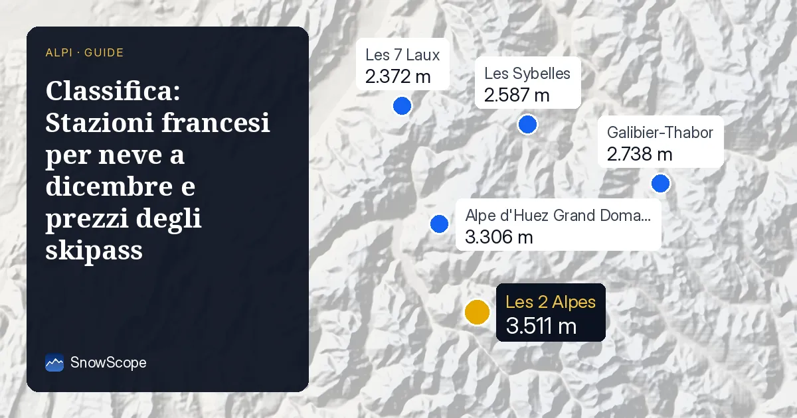

Classifica: Stazioni francesi per neve a dicembre e prezzi degli skipass
Les Karellis, Les 2 Alpes e Montgenèvre guidano la nostra classifica di dicembre, abbinando prezzi dei pass controllati a neve affidabile su 46 inverni passati. Sette stazioni alpine sono in lista, mentre Cauterets nei Pirenei evidenzia il divario di neve a inizio stagione.
Le previsioni neve in tempo reale per Les 2 Alpes nell'app SnowScopeAltezza neve, allerte powder e mappa 3D, gratis.
Come abbiamo classificato neve e prezzi
I prezzi bassi dei pass risparmiano denaro solo quando le piste hanno neve. Abbiamo classificato queste otto stazioni usando le tariffe verificate dell'inverno 2026-27 insieme alla nostra storia nevosa di 46 inverni passati.
Abbiamo confrontato la profondità abituale a dicembre, i dati di spessore scarso e abbondante (1 inverno su 10) e le quote settimanali che raggiungono 30 cm o 50 cm. Le basi degli impianti a 1.219 m, 1.284 m e 1.406 m iniziano con poca neve, quindi l'altezza conta.

Le prime tre per neve e prezzo
Les Karellis è al primo posto per valore e neve costante. Il pass adulto 18+ costa 36,00 EUR (1 giorno) e 191,00 EUR (6 giorni) su 45 km di piste mappate e 14 impianti. A metà montagna, a 2.017 m, ci sono 63 cm abituali (28 cm scarso, 117 cm abbondante), raggiungendo 30 cm o più nel 70 %, 85 %, 98 % e 98 % degli inverni passati nelle quattro settimane di dicembre.
Les 2 Alpes è seconda per neve in quota su 108 km di piste e 46 impianti fino a 3.511 m. La base a 1.284 m ha una media di 16 cm (0 cm scarso, 39 cm abbondante), raggiungendo 30 cm solo nel 2 % degli inverni passati tra l'1 e il 7 dicembre. Scia a metà montagna a 2.397 m (75 cm abituali) o 3.511 m (176 cm abituali, 72 cm scarso, 302 cm abbondante), dove 50 cm o più arrivano nel 96 % - 100 % degli inverni passati. I pass costano 68,00 EUR (1 giorno Freedom), 266,50 EUR (6 giorni) o 42 EUR il 28-29 novembre 2026.
Montgenèvre è terza con una base a 1.795 m (62 km di piste, 24 impianti) che mantiene 56 cm abituali (22 cm scarso, 102 cm abbondante) e 30 cm o più nel 61 %, 76 %, 89 % e 96 % degli inverni passati. I pass costano 45,50 EUR fino al 18 dicembre 2026, poi 56,00 EUR (301,00 EUR per 6 giorni). La neve a metà montagna è cresciuta dai primi 15 inverni agli ultimi 15 a Les Karellis (da 55 cm a 64 cm), Les 2 Alpes (da 63 cm a 77 cm) e Montgenèvre (da 49 cm a 76 cm).
Quattro opzioni alpine intermedie
Valloire-Valmeinier (131 km di piste, 34 impianti) offre un pass da 20 EUR il 5-6 dicembre 2026, o 54,90 EUR (1 giorno) e 278,50 EUR (6 giorni). La base a 1.406 m ha una media di 29 cm (12 cm scarso, 58 cm abbondante), mentre a 2.072 m ci sono 66 cm abituali (31 cm scarso, 120 cm abbondante). Serre Chevalier (157 km di piste, 70 impianti) chiede 276,00 EUR per 6 giorni fino al 18 dicembre 2026, poi 345,00 EUR, con 30 cm abituali a 1.219 m (8 cm scarso) e 111 cm a 2.765 m.
Orcières Merlette (49 km di piste, 26 impianti; pass 6 giorni Horizon da 227 EUR) mantiene 60 cm a 2.278 m (21 cm scarso, 108 cm abbondante). Vars-Risoul (131 km di piste, 38 impianti; 58 EUR 1 giorno, 298 EUR 6 giorni) ha una media di 51 cm a 2.177 m (20 cm scarso, 97 cm abbondante). Tutte e quattro hanno guadagnato neve a metà montagna dai primi 15 inverni agli ultimi 15: Valloire-Valmeinier (da 55 cm a 69 cm), Serre Chevalier (da 46 cm a 63 cm), Orcières Merlette (da 51 cm a 61 cm) e Vars-Risoul (da 42 cm a 62 cm).
Cauterets mostra il divario dei Pirenei
Cauterets è ultima perché la sua neve è in ritardo rispetto ai prezzi. L'area sciistica ha 25 km di piste e 9 impianti (1.725 m a 2.420 m), con pass a 46 EUR (1 giorno) e 276 EUR (6 giorni).
La profondità alla base a 1.725 m è di 23 cm abituali (3 cm scarso, 66 cm abbondante). A metà montagna a 2.072 m la media è di 33 cm (5 cm scarso, 87 cm abbondante), raggiungendo 30 cm nel 43 % degli inverni passati dall'1 al 7 e dall'8 al 14 dicembre, 52 % dal 15 al 21 dicembre e 67 % dal 22 al 28 dicembre. La neve in cima è di 42 cm abituali, mentre la profondità a metà montagna è scesa da 35 cm nei primi 15 inverni a 23 cm negli ultimi 15.
Le settimane migliori per prenotare a dicembre
Dall'1 al 7 dicembre, scia sopra i 2.017 m o scegli impianti alti come Les 2 Alpes a 3.511 m (98 % di probabilità di 30 cm o più) o Valloire-Valmeinier a 2.738 m (98 %).
Entro il 15-21 dicembre, la neve a metà montagna raggiunge 30 cm o più nel 98 % degli inverni passati a Les Karellis, Les 2 Alpes, Valloire-Valmeinier e Montgenèvre, prima che i prezzi aumentino il 19 dicembre 2026 a Montgenèvre e Serre Chevalier.
Consigli per sciatori
- Prenota prima del 19 dicembre 2026 a Montgenèvre (pass giornaliero 45,50 EUR) o Serre Chevalier (pass 6 giorni 276,00 EUR) per tariffe più basse.
- Dall'1 al 7 dicembre, evita le basi basse a Les 2 Alpes (1.284 m) e Serre Chevalier (1.219 m) e scia sugli impianti più alti.
- Punta al 15-21 dicembre per il 98 % di probabilità di neve a metà montagna nelle migliori stazioni alpine prima dell'inizio delle tariffe vacanziere.
- Prenota sul sito ufficiale della stazione e controlla il bollettino valanghe prima di andare fuori pista.
Altre mappe (siti esterni)
Riferimenti e crediti
- Les 2 Alpes, official ski pass shop, prices 2026-27 www.skipass-2alpes.com/en/pricing
- Les 2 Alpes, official ski pass shop, opening weekend offer www.skipass-2alpes.com/fr/forfaits/ski
- Valloire, official ski pass shop (Galibier-Thabor), winter 2026-27 skipass.valloire.com/fr/
- Les Karellis, official prices 2026-2027 www.leskarellis.com/fr/tarifs-2026-2027-sans-lien
- Montgenèvre, official ski pass prices 2026-27 skipass.montgenevre.com/fr/tarifs-guichet
- Orcières, official ticketing, winter 2026-27 pass.orcieres.com/en/ticketing
- Risoul, official ski pass page, Forêt Blanche 2026-27 risoul.labellemontagne.com/fr/hiver/forfaits/risoul-foret-blanche/
- Risoul, official 6-day Forêt Blanche pass page 2026-27 risoul.labellemontagne.com/fr/hiver/forfaits/6-jours-foret-blanche/
- Serre Chevalier, official booking site, ski passes 2026-27 reservation.serre-chevalier.com/achetez-vos-ski-pass-serre-chevalier-et-autres-prestations.html
- N'PY, Cauterets official ski pass prices 2026-27 www.n-py.com/fr/cauterets/forfaits-ski
- SnowScope, December snow at three heights and today's snow map snowscope.app/
Su questi numeri
Numeri della neve: storico neve SnowScope, 46 inverni passati (1980-81 - 2025-26) a tre quote di ogni località (un modello del passato corretto per la quota: una stima per un'area, non misure della località); dati di dicembre calcolati dalle altezze giornaliere di quegli inverni. Neve attuale e tendenza a due settimane: previsioni SnowScope (tendenza da ECMWF e GFS, un intervallo, non una promessa). Impianti e piste: mappatura OpenSkiMap. Prezzi: le pagine ufficiali qui sotto, lette il 2026-11-13; i prezzi possono cambiare, verificare prima di prenotare.
Cita questo articolo
Per ricerca, didattica o stampa: numeri e grafici sono liberamente riutilizzabili con licenza CC BY 4.0 citando così.
SnowScope (2026), Classifica: Stazioni francesi per neve a dicembre e prezzi degli skipass, https://snowscope.app/blog/it/2026/11/cheapest-snow-sure-ski-resorts-france-december-2026.html, consultato il 2026-11-14
SnowScope (Atlas Labs). (2026, November 14). Classifica: Stazioni francesi per neve a dicembre e prezzi degli skipass. SnowScope snow reports. https://snowscope.app/blog/it/2026/11/cheapest-snow-sure-ski-resorts-france-december-2026.html
BibTeX
@misc{snowscope2026cheapestsnowsureskiresor,
author = {{SnowScope (Atlas Labs)}},
title = {Classifica: Stazioni francesi per neve a dicembre e prezzi degli skipass},
year = {2026},
month = nov,
howpublished = {\url{https://snowscope.app/blog/it/2026/11/cheapest-snow-sure-ski-resorts-france-december-2026.html}},
note = {Published 2026-11-14 13:29 UTC; accessed 2026-11-14}
}· CC BY 4.0 · Metodi, dati e strumenti →
Les 2 Alpes: neve e temperatura per quota, quest'inverno vs lo scorso (strumenti) →
Segui Les 2 Alpes
Gratis: un messaggio quando arriva la neve e il meteo ogni mattina.
Altri bollettini neve

Montgenèvre ha 56 cm di neve abituale a dicembre alla base, offrendo agli sciatori del weekend una copertura migliore rispetto a Sestriere, oltre il confine.

Les Karellis offre 45 km di piste e uno skipass adulto di 6 giorni a 191,00 EUR con una probabilità del 98 % di neve a metà montagna a fine dicembre.